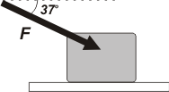

NO ME SALEN
EJERCICIOS RESUELTOS DE FÍSICA DEL CBC
Dinámica. Rozamiento.
|
|

|
| Adicional 38*- Una caja de 2 kg se encuentra en reposo sobre una superficie con rozamiento ( μe = 0,4 y μd = 0,2). Se aplica una fuerza F cuya intensidad es de 30 N según se muestra en la figura. Entonces: |
a) la aceleración de la caja vale 4,4 m/s²
b) la aceleración de la caja vale 8,2 m/s²
c) la aceleración de la caja vale 10 m/s²
d) la aceleración de la caja vale 13 m/s²
e) la aceleración de la caja vale 15 m/s²
f) la caja permanece en reposo |
 |
Este ejercicio es extraordinario... porque resume maravillosamente dos de los problemas más críticos de los estudiantes.
El asunto crítico más importante es éste: el ejercicio no puede resolverse en forma automática, requiere una comprensión clave del asunto. Se trata de lo siguiente, no es posible a priori saber si la caja se moverá o no. Si la fuerza (su componente horizontal) es mayor que la fuerza de rozamiento estática máxima, entonces, el bloque deslizará y sólo ahí adquirirá una aceleración que se podrá calcular. Para responder la primera parte habrá que usar el coeficiente estático y, si corresponde, la segunda parte la resolveremos usando el dinámico. |
 |
Acá tenés el DCL, que representa las dos situaciones. El rozamiento, Roz, será el que corresponda en cada caso. El peso, P, y la fuerza que comprime las superficies, N. La fueza F ya la represente por sus componentes.
Tené en cuenta que FX = F cos 37º y FY = F sen 37º.
FX = 30 N cos 37º = 24 N
Fy = 30 N sen 37º = 18 N
|
|
|
|
| Ahora seguimos con la clásica: después del DCL vienen las ecuaciones de Newton. Si el cuerpo se quedara quieto la aceleración sería nula, entonces... |
|
| |
ΣFx = m1 ax → |
FX — Roze = 0 |
[1] |
| |
ΣFy = m1 ay → |
N — P — Fy = 0 |
[2] |
| |
Roz estático → |
Rozmáx = μe N |
[3] |
|
|
De la [2]:
N = P + Fy
N = 20 N + 18 N
N = 38 N
Meto eso en la [3]:
Rozmáx = 0,4 . 38 N
Rozmáx= 15,2 N
Acá vemos que:
Rozmáx< FX
Y eso indica que la fuerza de rozamiento no logrará trabar la caja y deslizará.
El otro asunto crítico en el que muchos meten la pata es el que se resuelve con la ecuación [2]. O sea, muchos olvidan que la fuerza normal de apoyo, N, varía (en este caso crece) por la acción de la componente vertical de la fuerza. Y un error común -aunque menor- es pretender calcular el rozamiento estático con la ecuación [1] sin percatarse de que se trata de una situción hipotética que -como vimos- no ocurre.
Vamos a la parte de deslizamiento: |
|
| |
ΣFx = m1 ax → |
FX — Rozd = m . a |
[4] |
| |
ΣFy = m1 ay → |
N — P — Fy = 0 |
[2] |
| |
Roz dinámico → |
Rozd = μd N |
[5] |
|
|
De la [5]...
Rozd = 0,2 . 38 N
Rozd = 7,6 N
Meto eso en la [4] y despejo a:
a = (FX — Rozd ) / m
a = (24 N — 7,6 N ) / 2 kg
|
|
| |
a = 8,2 m/s² |
respuesta b) |
|
|
|
|
| No fue tan dramático. |
|
| Este ejercicio fue tomado en el 2do. examen final, el 18 de junio de 2008. |
|
 |
| DESAFIO: ¿puede darse el caso de que la aceleración sea de frenado? |
|
| Algunos derechos reservados.
Se permite su reproducción citando a ricuti, poniendo la dirección de web de donde lo sacaste. Última actualización dic-13. Buenos Aires, Argentina. |
|
|
|